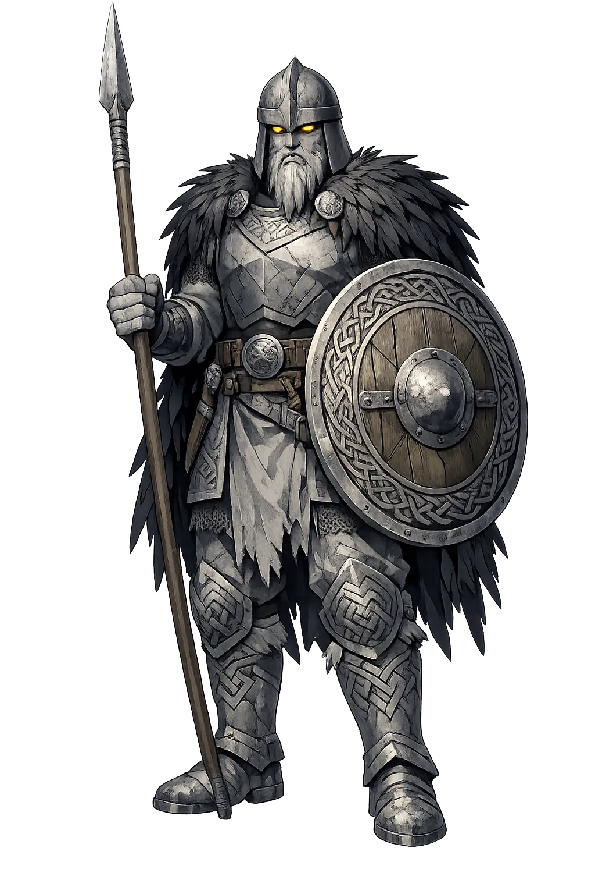
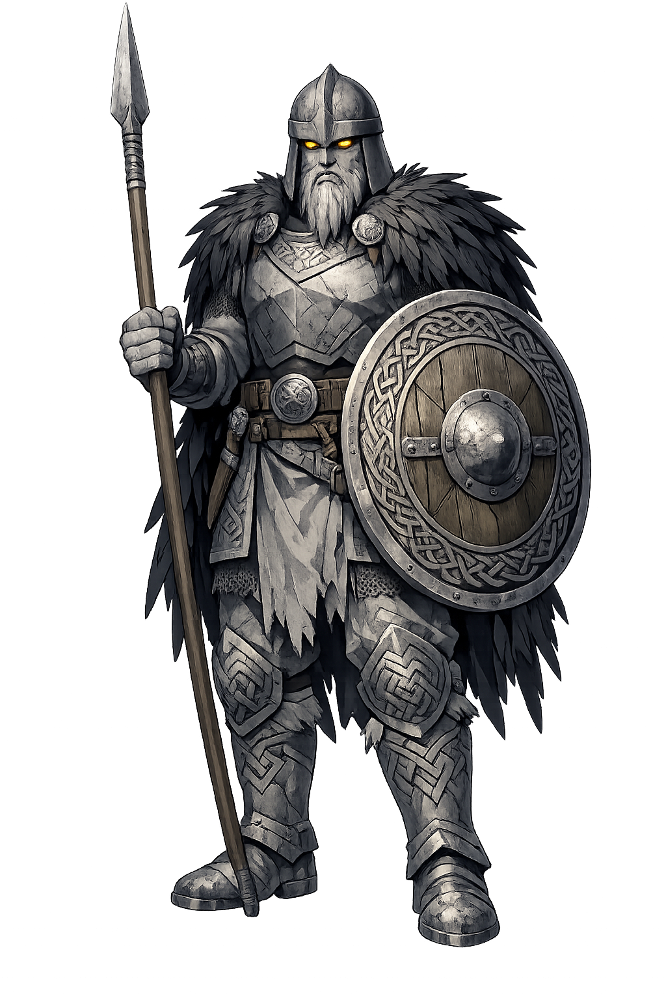

The Authentic Orthography
Watchman, Ragnarök Herald · The Watchman of the Last Morning

Unicode restoration and ASCII comparison
ᛁᚴᚴᚦᛁᚱ
The name in its original Norse form. Eggþér (ᛁᚴᚴᚦᛁᚱ) is attested in the source tradition — “Sword guardian”. Its acute stress marks carry the full phonetic and orthographic weight of the source tradition.
eggther
Reduced to plain eggther, the name loses everything that made it specific: acute stress marks. What remains is an ASCII string that machines can parse but that no longer speaks with its original voice.
Eggþér
The Unicode restoration recovers what ASCII flattened. Eggþér restores acute stress marks, returning the name to its original written dignity. The domain encodes to Punycode, but the browser displays the truth.
Eggþér.com → xn--eggr-dpa9j.com
The non-ASCII characters in Eggþér are encoded while the ASCII remains visible. To the DNS, it is Punycode. To humanity, it is Eggþér.
How Eggþér travels from ancient script to the modern URL
Owned, ideal, and ASCII forms of Eggþér
Eggþér
Restores ᛁᚴᚴᚦᛁᚱ. The live temple domain — eggþér.com.
eggther
Flattens ᛁᚴᚴᚦᛁᚱ. The plain ASCII fallback — what DNS and legacy systems see.
How Eggþér was spoken
The Giant Herdsman on the Mound
Eggþér appears in the sources only once, but the moment is unforgettable. At Ragnarök, he sits on a mound and plays his harp, while the giantess guarding him joyfully proclaims the ruin of the gods. His music is the soundtrack of the world's end — a strange, pastoral prelude to annihilation.
He sits on a grave-mound or howe, a liminal seat between living and dead.
His playing announces the final age; music becomes an omen of doom.
A female jotunn stands watch and laughs at the coming destruction.
His presence signals that the doom of the gods has begun.
Stories of Eggþér
Eggþér is one of the most enigmatic figures in Norse myth. He has no extended story, no family tree, no cult. Yet his single appearance in Völuspá makes him unforgettable: the herdsman on the mound, playing while the world ends.
Völuspá 42 describes the scene: 'Eggþér sat on a mound and played his harp; the giantess's watchman gladdened him greatly. There crowed Fjalarr, the bright-red cock, at the gods; the golden-combed one warned the heroes.' The juxtaposition of music, animals, and apocalypse is haunting. Eggþér is not fighting; he is playing, as if the end of the cosmos were a pastoral occasion.
In the verses surrounding Eggþér's appearance, the wolf Garm breaks free before Gnipahellir, the sea crashes over the land, and the ship Naglfar is loosed from its moorings. Eggþér's harp sounds in the interval before the final battle, a moment of terrible calm. He is the herald whose music marks the transition from uneasy order to final chaos.
The meaning of Eggþér's name is disputed. Some scholars connect the first element to Old Norse egg, 'edge (of a sword),' making him a 'sword-servant' or warrior; others see a giant's name of uncertain origin. His role as herdsman (hirðir) suggests a pastoral figure drawn into the apocalyptic scene, perhaps symbolizing the natural world's complicity in the gods' doom.
Eggþér is the musician at the edge of the world. While gods and giants arm for the final battle, he sits on a mound and plays. His song is not a call to arms; it is an acknowledgment that the old order is finished and something else — even if that something is silence — is about to begin.
Enter Extended Lore